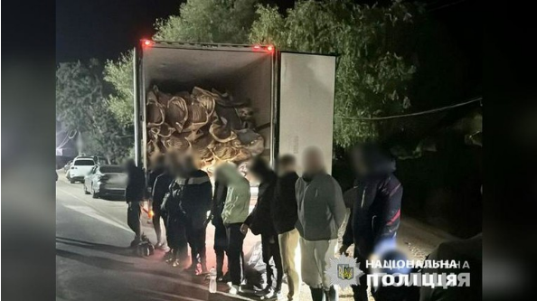

乌克兰敖德萨警方报告：16名逃避兵役者试图藏身在一辆运牛肉的冷藏车中。

图为敖德萨警方提供：逃避兵役者在试图逃离乌克兰的冷藏车上被捕。
敖德萨警方周一（8月5日）宣布，16名乌克兰逃避兵役者和两名被控人口走私的外国人在试图乘坐一辆冷藏卡车离开乌克兰时被捕。
这令人想起2019年10月的英国埃塞克斯冷藏车偷渡案，当时39名越南籍偷渡者藏在一辆货车的冷冻货柜内，在从比利时到英国的途中，由于车内氧气耗尽，所有偷渡者均遇难而死。遇难者中有一名26岁的越南女性在死前给家人发送了诀别短信，短信内容透露了她感到非常冷并且呼吸困难。
“今日俄罗斯”报道说，被捕时，这些正当服军役年纪的男子被发现藏在卡车里，其身后是一大堆牛肉，没有偷渡者死伤的报告。警方表示，那辆运肉的卡车试图从乌克兰开往邻国摩尔多瓦，由两名外国人驾驶，警方没有说明这两人的国籍。
警方称，每个想要逃跑的人都向“蛇头”支付了6000美元到8000美元不等的旅行费用。据称，“蛇头”还为他们提供“额外服务”，即承诺在他们的身份文件上盖章，保证他们像“合法”进入摩尔多瓦的一样，并为此收取额外的2000欧元。
两名“蛇头”面临非法越境贩卖人口的指控。警方认为他们属于一个有组织的人口走私犯罪团体，他们可能会被判入狱7到9年。
乌克兰边境服务部门负责人马特维楚克6月份曾表示，估计每天有超过100名逃避兵役的男子试图离开这个国家，他们中的大多数会被抓回。而俄罗斯媒体称，这一数字至少是乌克兰官方公布数字的3倍。
乌克兰今年4月颁布的征兵动员法将征兵年龄从27岁降至25岁，大大简化了征兵程序，并对逃避兵役者引入了新的惩罚措施。
据《乌克兰真理报》网站报道，乌克兰国防部要求所有18岁至60岁乌克兰男性公民在今年7月16日前，前往征兵办公室或通过应用程序等方式更新其军事登记数据，违者将受到相应处罚。
乌国防部人事政策司司长安德鲁西亚克称，7月16日前未更新军事登记数据的有关人员，或将被追究行政责任，并被处以1.7万至2.55万格里夫纳（1万乌克兰格里夫纳约合1770元人民币）的罚款。他表示，并非所有更新军事登记数据的公民都会被征召服兵役，此举是为了体现公平同时便于国家准确了解相关人员的基数。
7月，乌克兰《镜报周刊》委托乌民调机构开展的一项民调显示，近一半受访者（46.1%）认为逃避兵役并不可耻，29.1%的受访者持反对意见，此外，43.9%的受访者认为与俄罗斯进行和谈的时机已经到来，35%的受访者持反对态度。
另据俄罗斯国防部7月中旬宣布，今年俄春季征兵工作已经结束，共有15万人应征入伍并被派往俄武装部队和其他军事编队。征兵率稳定保持在日均约1000人的水平。
“今日俄罗斯”网站8月6日还有一条新闻吸引关注，标题叫“欧盟国家加大俄罗斯液化天然气进口量”。
报道称，尽管欧盟承诺“到 2027 年停止使用俄罗斯燃料”，但今年上半年俄罗斯对欧盟国家的液化天然气出货量与去年同期相比增长了7%，其中法国从俄罗斯进口的液化天然气“增加了一倍多”，而法国进口的俄天然气据信又运至欧洲其他国家，比如法国对比利时液化天然气出口增长了近 10%。
由于胡塞武装袭击红海船只，中东的天然气已无法轻松运往欧盟，而俄罗斯通过北极航线的液化天然气运输却未受影响。
在乌克兰和中东的两场冲突迄今还看不到尽头。
和平诚可贵，天涯共冷暖。